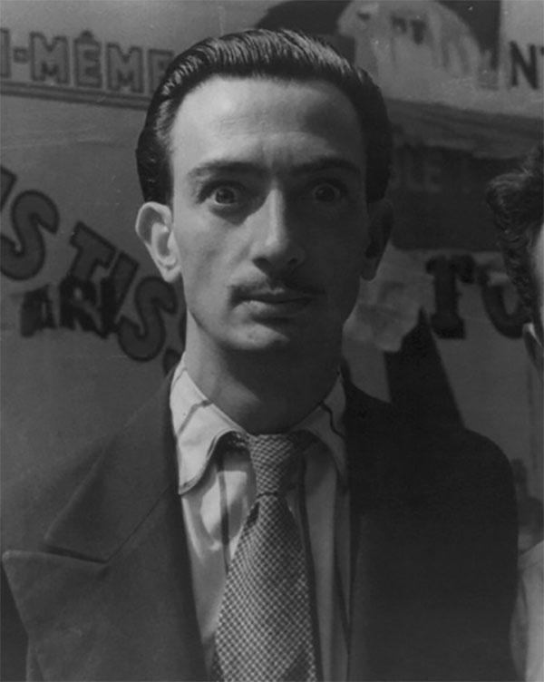
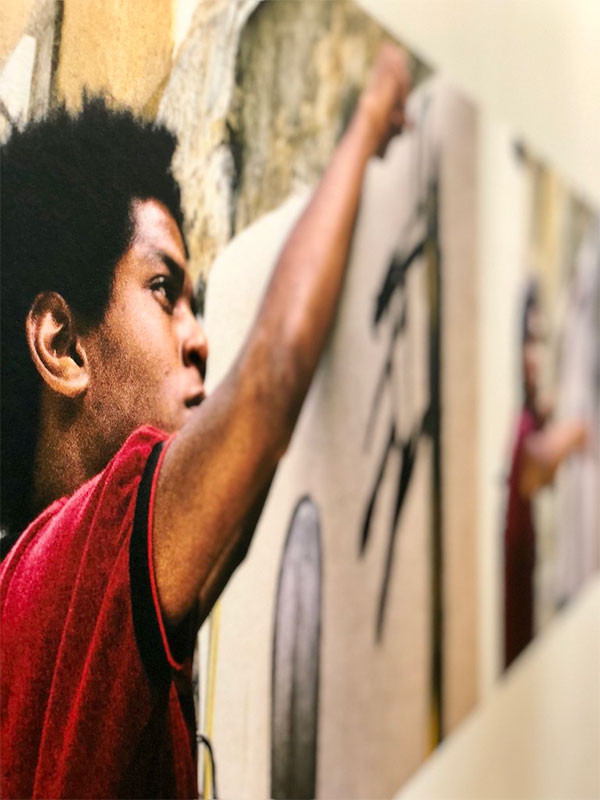
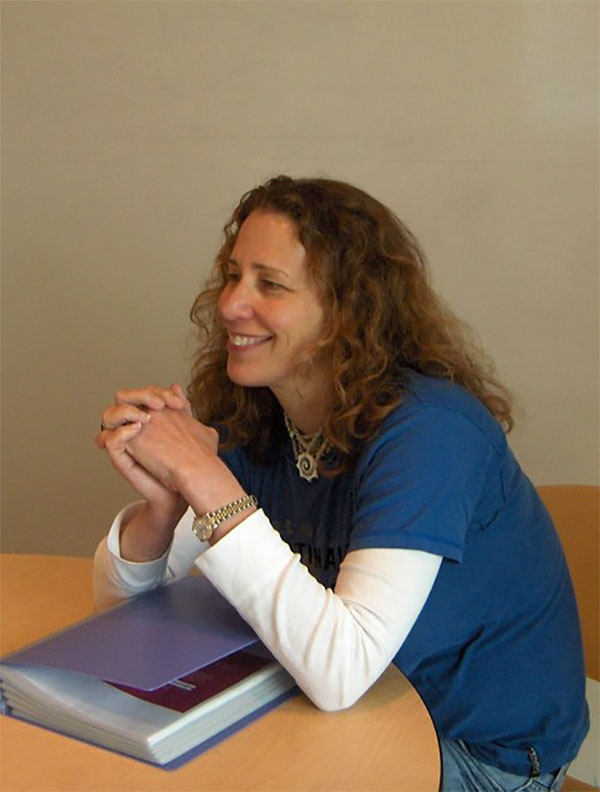
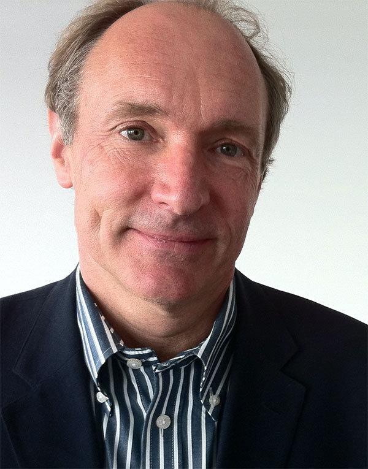

Art
Artists
Frida Kahlo
Frida Kahlo with Diego Rivera
"Nickolas Muray" by rocor is licensed under CC BY-NC 2.0.
Salvador Dalí
Man Ray and Salvador Dali, Paris, 1934
"Man Ray and Salvador Dali, Paris by Carl Van Vechten, 1934 (LOC)" by pingnews.com is licensed under CC PDM 1.0.
Jean-Michel Basquiat
"Photographies de Jean-Michel Basquiat en plein travail" by y.caradec is licensed under CC BY-SA 2.0.
Design
Designers
David Carson

Image by pennstatenews is licensed under CC BY-NC 2.0.
Neville Brody

"Typo Berlin 2013 - Day Two" by Jens_T is licensed under CC BY-NC 2.0.
Susan Kare
"take kare of the user intrface!" by Esthr is licensed under CC BY-NC 2.0.
Engineering
Engineers
Håkon Wium Lie
"Håkon Wium Lie, Opera" by Martin Bekkelund is licensed under CC BY-NC-ND 2.0.
Tim Berners-Lee
"File:Tim Berners-Lee 2012.jpg" by cellanr is licensed under CC BY-SA 2.0.
Linus Torvalds
"File:LinuxCon Europe Linus Torvalds 05.jpg" by Krd is licensed under CC BY-SA 4.0.
Typography
Typographers
Jan Tschichold

Photo by Eduard Wasow, 1930, public domain (wikimedia)
Matthew Carter

"File:Matthew Carter, 2014.jpg" by Christopher Lewis is licensed under CC BY 4.0.